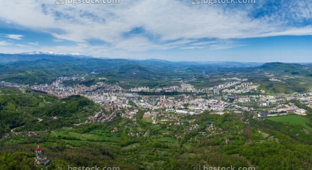

Представяне
Габрово е областен град в Централна България, разположен по поречието на река Янтра. Градът е известен като столица на хумора и сатирата и е важен културен и икономически център.
Съчетавайки богата история, красива природа и интересни забележителности, Габрово е предпочитана туристическа дестинация.